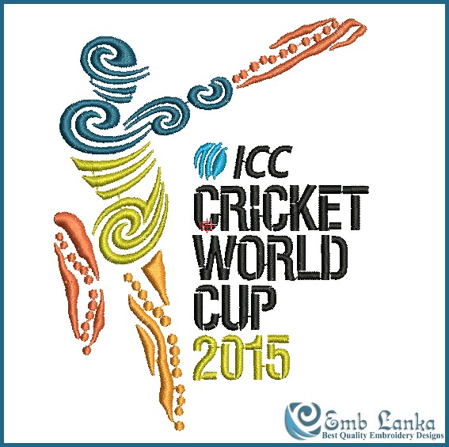

ICC Cricket World Cup 2015
Australia + New Zeland
The 2015 ICC Cricket World Cup will be the 11th ICC Cricket World Cup, and will be jointly hosted by Australia and New Zealand and is scheduled to take place from 14 February to 29 March 2015..